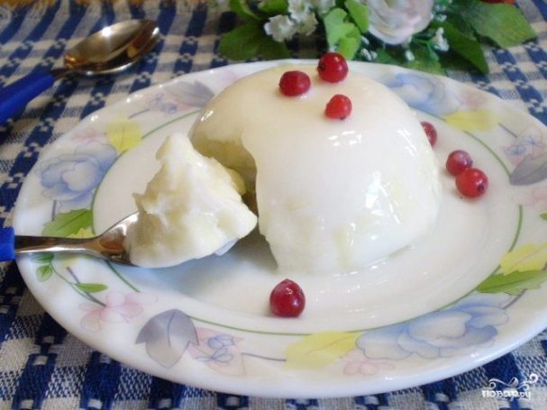
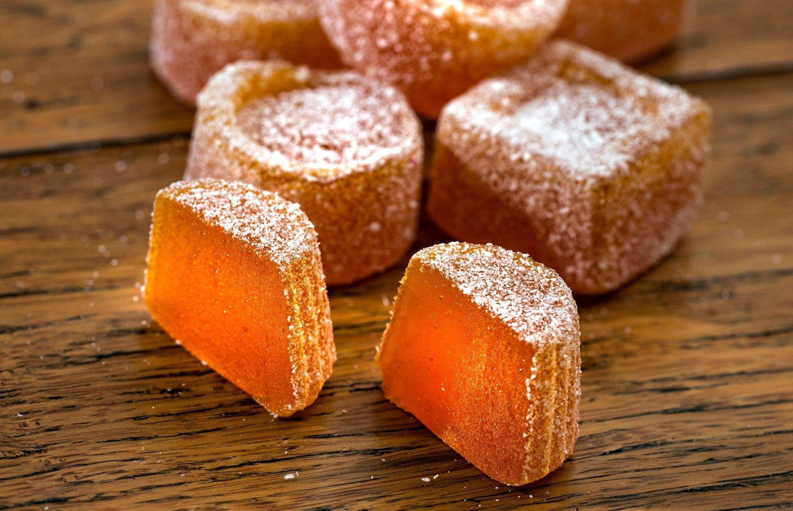

Tus recetas de postres favoritas
Te ayudarán a comer bien, a disfrutar de tu postre favorito.

Frutas y bayas "Napoleón"
Un postre muy fácil de preparar pero increíblemente efectivo elaborado con deliciosos ingredientes. ¡Preparado para uno-dos-tres y comido también! ¡Asegúrese de mimar a sus seres queridos!

Jalea de frutas
A menudo hago gelatina de kéfir de frutas. Utilizo una manzana dulce como componente de fruta.

Mermelada de manzana rápida
¿Hay manzanas de más en la casa y han perdido su atractivo? Le sugiero que haga una mermelada de manzana rápida con ellos. Conservará todas las propiedades beneficiosas de la manzana.